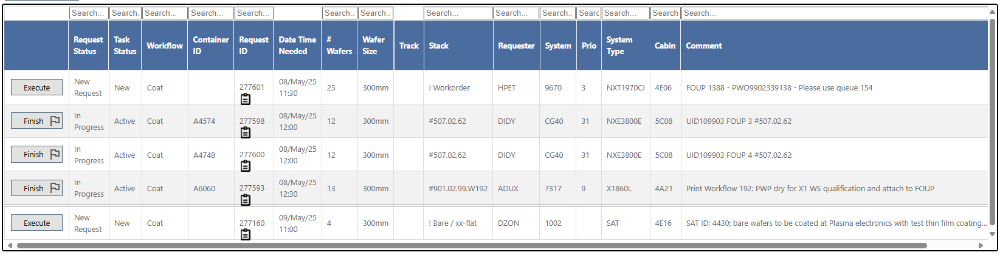
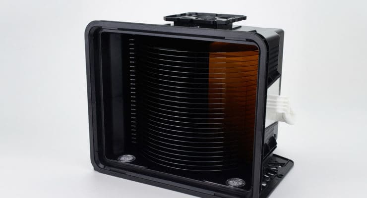
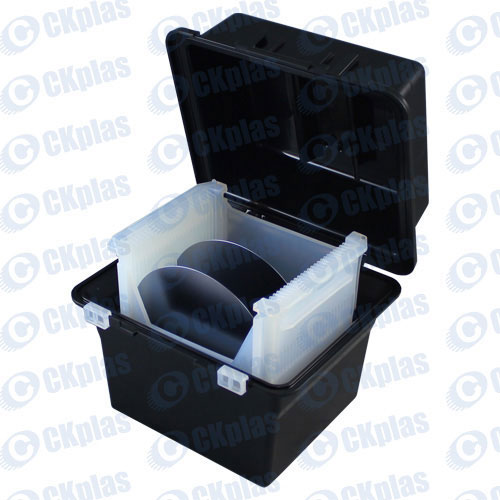

Alle Orders komen binnen in ons ordersysteem, dat we WRT (Wafer Request Tool) noemen. Dit geldt voor zowel 300mm als 200mm wafers.

Layout WRT
In dit ordersysteem vind je verschillende belangrijke informatie over elke bestelling, zoals:
Wanneer de operator een bestelling wil uitvoeren, klikt hij of zij op “Execute”.
Daarna moet de operator een FOUP (voor de 300mm wafers) of een Carrier Box (voor de 200mm wafers) kiezen en aan de bestelling toewijzen.
Vervolgens moet de operator de juiste wafergrootte (300mm of 200mm) en het gewenste aantal wafers in de FOUP of Box plaatsen.
Nadat dat gedaan is, kan de operator de gewenste workflow volgen, die kan bestaan uit verschillende stappen zoals coaten, ontwikkelen, bakken, meten, schoonmaken of speciale verzoeken.

FOUP staat voor Front Opening Unified Pod.
Het is een gesloten, gestandaardiseerde container die wordt gebruikt om wafers veilig te transporteren tussen machines in een cleanroom.
Een FOUP bevat meestal 25 wafers, de wafers worden horizontaal in de sleuvel geplaatst binnenin.
Een FOUP is belangrijk omdat wafers berschermt worden tegen deeltjes, stof, krassen en statische elketriciteit. Wafers zijn traceerbaar via QR-Codes en RFID's.

FOUP (open deur)
Een carrier box heeft dezelfde principe om de wafers te beschermen, alleen ziet die er anders uit.
Het is een kleine vierkante box van kunststof, hierin staan de wafers verticaal rechtop in de gleuven in plaats van liggen horizontaal zoals in een FOUP.
Ook maak je de box open doormiddel van een deksel/klep in plaats van een deur.

(open) carrier box